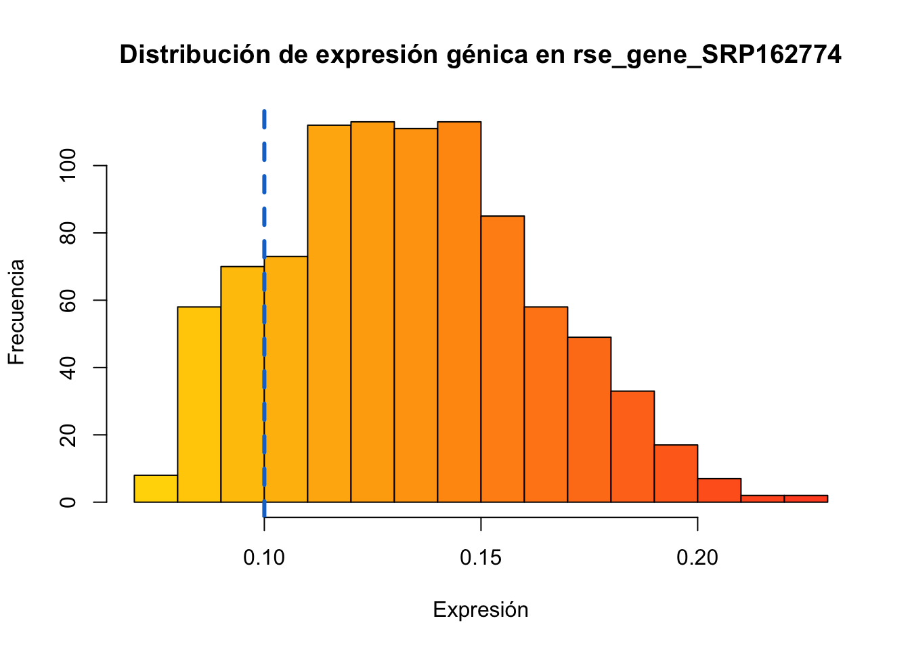
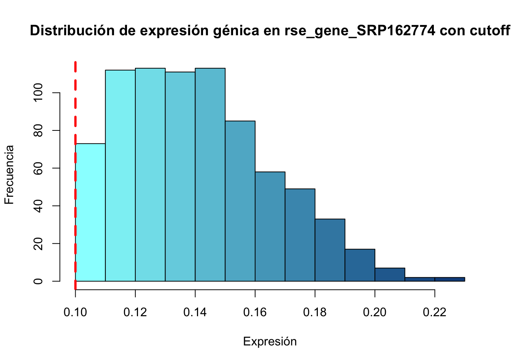
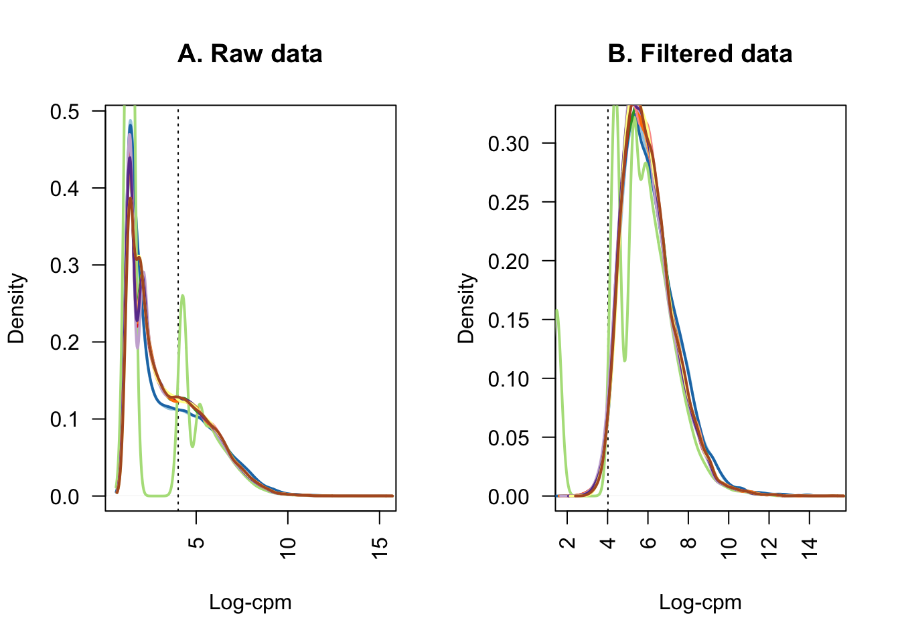

Chapter 4 Transformación de los datos
Ahora se procederá a filtrar y manipular los datos con el fin de obtener los resultados más confiables posibles.
A partir del análisis estadístico de la proporción génica, se puede observar que los valores divergen por una unidad y media aproximadamente, como máximo.
## Generar la variable que almacena la proporción génica
rse_gene_SRP162774$assigned_gene_prop <- rse_gene_SRP162774$recount_qc.gene_fc_count_all.assigned / rse_gene_SRP162774$recount_qc.gene_fc_count_all.total
summary(rse_gene_SRP162774$assigned_gene_prop)## Min. 1st Qu. Median Mean 3rd Qu. Max.
## 0.07559 0.11192 0.13144 0.13306 0.15312 0.223654.1 Filtrado
Para el filtrado de los datos se aplicarán dos parámetros: - Calidad de biblioteca: referente a la proporción de lecturas asignadas a genes sobre las lecturas totales. - Nivel de expresión: basándose en niveles promedio de expresión de los datos y valores como el cpm (counts per million).
## Observar la tendencia de expresión e información estadística de los estados de la categoría a evaluar
with(colData(rse_gene_SRP162774), tapply(assigned_gene_prop, sra_attribute.drug_treatment, summary))## $Ibuprofen
## Min. 1st Qu. Median Mean 3rd Qu. Max.
## 0.07559 0.11281 0.13359 0.13368 0.15227 0.22365
##
## $Placebo
## Min. 1st Qu. Median Mean 3rd Qu. Max.
## 0.07901 0.11017 0.12781 0.13197 0.15461 0.21185A partir del siguiente histograma, es posible observar que la calidad de los datos varía mucho, lo que indica baja calidad de la biblioteca. Sin embargo, se ha decidido proceder con el filtrado y limpieza de datos.
Se decidió que la proporción de muestras sea mayor 0.1, debido la baja frecuencia de aquellas previas al corte 0.1. Debe resaltarse, que aún así siguen existiendo algunas muestras con baja, pero se intentó perder la menor información posible. Esto también se basa en las proporciones observadas anteriormente, donde el primer cuartil de ambos estados es ~0.1 por lo que podemos tomarlo como punto de corte. Para la parte de la cola (derecha), a pesar de tener baja frecuencia, son datos más confiables, por lo cual no se eliminaron.
## Salvar información cruda del proyecto
rse_gene_SRP162774_unfiltered <- rse_gene_SRP162774
## Eliminar muestras malas
colorGradient <- colorRampPalette(c('gold','firebrick1'))
hist(rse_gene_SRP162774$assigned_gene_prop, col = colorGradient(20), main='Distribución de expresión génica en rse_gene_SRP162774', xlab='Expresión', ylab='Frecuencia')
abline(v = 0.1, col="dodgerblue3", lwd=3, lty=2)
## Verificar el número de muestras que cumplen con el criterio
table(rse_gene_SRP162774$assigned_gene_prop < 0.1)##
## FALSE TRUE
## 775 136Aplicar el corte al pico de la distribución. Se observa una forma más aceptable. A partir del análisis estadístico, se decidirá el valor mínimo para la calidad de expresión génica. Ya que el mínimo y el primer cuartil presentan 0.000, y la media tiene un valor muy bajo aún. Se tomará como punto de corte a 0.1 (muestras poco informativas)
## Realizar el corte y observar la distribución
rse_gene_SRP162774 <- rse_gene_SRP162774[, rse_gene_SRP162774$assigned_gene_prop > 0.1]
colorGradient <- colorRampPalette(c('darkslategray1','dodgerblue4'))
hist(rse_gene_SRP162774$assigned_gene_prop, col = colorGradient(13), main='Distribución de expresión génica en rse_gene_SRP162774 con cutoff', xlab='Expresión', ylab='Frecuencia')
abline(v = 0.1, col="red", lwd=3, lty=2)
## Se calculan los niveles medios de expresión de los genes en las muestras
gene_means <- rowMeans(assay(rse_gene_SRP162774, "counts"))
summary(gene_means)## Min. 1st Qu. Median Mean 3rd Qu. Max.
## 0.000 0.000 0.028 12.653 1.563 19203.401Debido a los resultados del análisis estadístico anterior, donde el 1er cuartil y la media toman valores de 0, se procederá a tomar 0.1 como valor mínimo para niveles de expresión génica.
## Eliminar genes con menor a 0.1
rse_gene_SRP162774 <- rse_gene_SRP162774[gene_means > 0.1, ]
## Comparar dimensión final
dim(rse_gene_SRP162774_unfiltered)## [1] 63856 911dim(rse_gene_SRP162774)## [1] 26644 775Después de la limpieza, se ha conservado el 41.73% del total de los datos. La gran pérdida de los mismos se atribuye a una baja caliad de la biblioteca original.
#Obtener el porcentaje de información conservada después de la limpieza
round(nrow(rse_gene_SRP162774) / nrow(rse_gene_SRP162774_unfiltered) * 100, 2)## [1] 41.73Se decidió probar con limpieza automatizada por medio de la función keep.exprs de limma con la esperanza de obtener una integridad mayor de los datos.
#Calculo de factores de normalización
dge_auto <- DGEList(
counts = assay(rse_gene_SRP162774, "counts"),
genes = rowData(rse_gene_SRP162774)
)
dge_auto <- calcNormFactors(dge_auto)cpm <- cpm(dge_auto)
lcpm <- cpm(dge_auto, log=TRUE)
L <- mean(dge_auto$samples$lib.size) * 1e-6
M <- median(dge_auto$samples$lib.size) * 1e-6
c(L, M)## [1] 0.8075566 0.7277270## Determinarémos cuáles genes cuentan con un nivel de expresión significativo con la función filterByExpr.
keep.exprs <- filterByExpr(dge_auto, group=dge_auto$samples$group)
dge_auto <- dge_auto[keep.exprs,, keep.lib.sizes=FALSE]
dim(dge_auto)## [1] 7960 775dim(rse_gene_SRP162774)## [1] 26644 775El filtrado automatizado logró conservar el 12.49% de los datos. Por esto mismo se decidió no proceder con esta información, ya que es muy poca.
round(nrow(dge_auto) / nrow(rse_gene_SRP162774) * 100, 2)## [1] 29.88El siguiente gráfico muestra el corte de datos realizado por keep.exprs debido a su baja calidad.
lcpm.cutoff <- log2(10/M + 2/L)
nsamples <- ncol(dge_auto)
col <- brewer.pal(nsamples, "Paired")## Warning in brewer.pal(nsamples, "Paired"): n too large, allowed maximum for palette Paired is 12
## Returning the palette you asked for with that many colorspar(mfrow=c(1,2))
plot(density(lcpm[,1]), col=col[1], lwd=2, las=2, main="", xlab="")
title(main="A. Raw data", xlab="Log-cpm")
abline(v=lcpm.cutoff, lty=3)
for (i in 2:nsamples){
den <- density(lcpm[,i])
lines(den$x, den$y, col=col[i], lwd=2)
}
lcpm <- cpm(dge_auto, log=TRUE)
plot(density(lcpm[,1]), col=col[1], lwd=2, las=2, main="", xlab="")
title(main="B. Filtered data", xlab="Log-cpm")
abline(v=lcpm.cutoff, lty=3)
for (i in 2:nsamples){
den <- density(lcpm[,i])
lines(den$x, den$y, col=col[i], lwd=2)
}